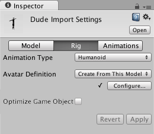

Importing humanoid animations
When Unity imports Model files that contain Humanoid Rigs and Animation, it needs to reconcile the bone structure of the Model to its Animation. It does this by mapping each bone in the file to a Humanoid Avatar so that it can play the Animation properly. For this reason, it is important to carefully prepare your Model file before importing into Unity.
- Define the Rig type and create the Avatar.
- Correct or verify the Avatar's mapping.
- Once you are finished with the bone mapping, you can optionally click the Muscles & Settings tab to tweak the Avatar's muscle configuration.
- You can optionally save the mapping of your skeleton's bones to the Avatar as a Human Template (.ht) file.
- You can optionally limit the animation that gets imported on certain bones by defining an Avatar Mask.
- From the Animation tab, enable the Import Animation option and then set the other Asset-specific properties, .
- If the file consists of multiple animations or actions, you can define specific action ranges as Animation Clips.
- For each Animation Clip defined in the file, you can:
- Change the pose and root transform
- Optimize looping
- Mirror the animation on both sides of the Humanoid skeleton.
- Add curves to the clip in order to animate the timings of other items
- Add events to the clip in order to trigger certain actions in time with the animation
- Discard part of the animation similar to using a runtime Avatar Mask but applied at import time
- Select a different Root Motion Node to drive the action from
- Read any messages from Unity about importing the clip
- Watch a preview of the animation clip
- To save your changes, click the Apply button at the bottom of the Import Settings window or Revert to discard your changes.
Set up the Avatar
From the Rig tab of the Inspector window, set the Animation Type to Humanoid. By default, the Avatar Definition property is set to Create From This Model. If you keep this option, Unity attempts to map the set of bones defined in the file to a Humanoid Avatar.

Note: In some cases, you can change this option to Copy From Other Avatar to use an Avatar you already defined for another Model file. For example, if you create a Mesh (skin) in your 3D modeling application with several distinct animations, you can export the Mesh to one FBX file, and each animation to its own FBX file. When you import these files into Unity, you only need to create a single Avatar for the first file you import (usually the Mesh). As long as all the files use the same bone structure, you can re-use that Avatar for the rest of the files (for example, all the animations).
If you enable this option, you must specify which Avatar you want to use by setting the Source property.
Click the Apply button. Unity tries to match up the existing bone structure to the Avatar bone structure. In many cases, it can do this automatically by analyzing the connections between bones in the rig.
If the match succeeds, a check mark appears next to the Configure menu. Unity also adds an Avatar sub-asset to the Model Asset, which you can find in the Project view.
A successful match simply means that Unity was able to match all of the required bones. However, for better results, you also need to match the optional bones and set the model in a proper T-pose.
If Unity can't create the Avatar, a cross appears next to the Configure button, and no Avatar sub-asset appears in the Project view.

Since the Avatar is such an important aspect of the animation system, it is important to configure it properly for your Model.
For this reason, whether or not the automatic Avatar creation succeeds, you should always check that your Avatar is valid and properly set up.
Configure the Avatar
If Unity failed to create the Avatar for your model, you must click the Configure ... button on the Rig tab to open the Avatar window and fix your Avatar.
If the match was successful, you can either click the Configure ... button on the Rig tab or open the window from the Project view:
- Click the Avatar sub-Asset in the Project view. The Inspector displays the name of the Avatar and a Configure Avatar button.
- Click the Configure Avatar button.
If you haven't already saved the Avatar, a message appears asking you to save your scene:
The reason for this is that in Configure mode, the Scene view is used to display bone, muscle and animation information for the selected model alone, without displaying the rest of the scene.
Once you have saved the scene, the Avatar window appears in the Inspector displaying any bone mapping.
Make sure the bone mapping is correct and that you map any optional bones that Unity did not assign.
Your skeleton needs to have at least the required bones in place for Unity to produce a valid match. In order to improve your chances for finding a match to the Avatar, name your bones in a way that reflects the body parts they represent. For example, "LeftArm" and "RightForearm" make it clear what these bones control.
Mapping strategies
If the model does not yield a valid match, you can use a similar process to the one that Unity uses internally:
- Choose Clear from the Mapping menu at the bottom of the Avatar window to reset any mapping that Unity attempted.

- Choose Sample Bind-pose__from the __Pose menu at the bottom of the Avatar window to approximate the Model's initial modeling pose.

- Choose Mapping > Automap to create a bone-mapping from an initial pose.
- Choose Pose > Enforce T-Pose to set the Model back to to required T-pose.
If automapping fails completely or partially, you can manually assign bones by either dragging them from the Scene view or from the Hierarchy view. If Unity thinks a bone fits, it appears in green in the Avatar Mapping tab; otherwise it appears in red.
Resetting the pose
The T-pose is the default pose required by Unity animation and is the recommended pose to model in your 3D modeling application. However, if you did not use the T-pose to model your character and the animation does not work as expected, you can choose the :
If the bone assignment is correct, but the character is not in the correct pose, you will see the message "Character not in T-Pose". You can try to fix that by choosing Enforce T-Pose from the Pose menu. If the pose is still not correct, you can manually rotate the remaining bones into a T-pose.
Creating an Avatar Mask
Masking allows you to discard some of the animation data within a clip, allowing the clip to animate only parts of the object or character rather than the entire thing. For example, you may have a standard walking animation that includes both arm and leg motion, but if a character is carrying a large object with both hands then you wouldn't want their arms to swing to the side as they walk. However, you could still use the standard walking animation while carrying the object by using a mask to only play the upper body portion of the carrying animation over the top of the walking animation.
You can apply masking to animation clips either during import time, or at runtime. Masking during import time is preferable, because it allows the discarded animation data to be omitted from your build, making the files smaller and therefore using less memory. It also makes for faster processing because there is less animation data to be blended at runtime. In some cases, import masking may not be suitable for your purposes. In that case, you can apply a mask at runtime by creating an Avatar Mask Asset, and using it in the layer settings of your Animator Controller.
To create an empty Avatar Mask Asset, you can either:
- Choose Create > Avatar Mask from the Assets menu.
- Click the Model object you want to define the mask on in the Project view, and then right-click and choose Create > Avatar Mask.
The new Asset appears in the Project view:

You can now add portions of the body to the mask and then add the mask to either an Animation Layer or add a reference to it under the Mask section of the Animation tab.